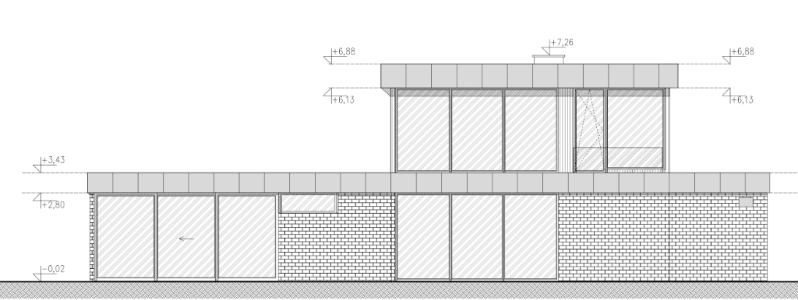

Exterior architectural elevation of the eastern garden facade looking West towards the building.
Configured in the 2D Building Coordinate System with direction: "north" (South → North from left to right), active horizontal plan axis Y (<north - south>),
Point 0 / Axis A (Oś A) at Y = 0 mm located 290 mm from the right edge of the wall (same Axis A as on the West Facade),
and overall elevation length of 21,415 mm.
Hover or click the numbered markers on the source architectural drawing to inspect each opening and recessed/projecting massing zone.

Unlike the West Facade (which looks East and has direction: "south"), the East Facade looks West from the eastern garden and has direction: "north" (moving South to North from left to right).
east_facade)
• Position on Map (Left Edge): Y = 21,125 mm (South Edge)
• Direction: "north" (Left-to-right moves South → North)
• Overall Length: 21,415 mm (North Edge at Y = -290 mm)
• Point 0 / Axis A (Oś A, Y = 0): Located 290 mm from the right edge (at Screen X = 21,125 mm)
• Screen Formula: localX = 21,125 - (win.y + win.width)
• Left Ground Wing (0 – 9,525 mm): No upper floor; recessed in the back (X = 14,980 mm). Sequence: 200 mm left pier + 5,640 mm O6b + 250 mm pier + 1,760 mm O6a + 1,675 mm wall.
• Center 2-Story Volume (9,525 – 18,315 mm, width 8,790 mm): Projects forward in the front (X = 0 mm along Axis 6). Sequence: 200 mm left pier + 5,090 mm O9/O3 + 3,500 mm right zone.
• Right Ground Wing (18,315 – 21,415 mm, width 3,100 mm): No upper floor; recessed in the back. Contains Axis A 290 mm from the right edge.
• Smaller Windows (Default — 3 in a row): Both O9 (upper) and O3 (ground) are split into 3 equal symmetric panes of 1,636.7 mm separated by 2 × 90 mm inner window pillars (5,090 mm total width, 6 panes in center).
• Bigger Windows (2 in a row): Both O9 and O3 are split into 2 equal symmetric panes of 2,500 mm separated by 1 × 90 mm inner window pillar (5,090 mm total width, 4 panes in center).
Complete schedule of all 5 window and terrace glazing assemblies on the East Facade (21,415 mm overall length). Values synchronize automatically with the active window version and live Architecture Database.
| Symbol | Floor / Room & Depth Plane | Screen Offset (South → North) | Global Y (from Axis A) | Width (mm) | Height (mm) | Sill (hp) | Sashes & 90 mm Pillar Configuration |
|---|